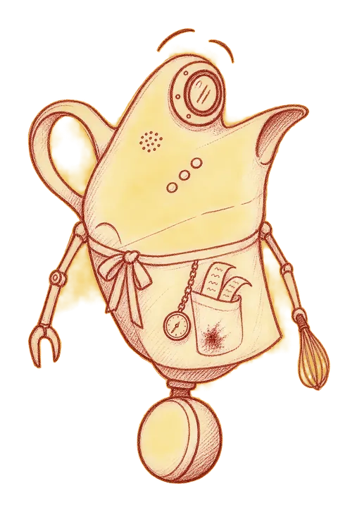

We're asking for 20 minutes by video or phone. It's a conversation. It can be anonymous, attributed, or something in between.
Because we want to learn from people at different edges of what's going on.
We think the waves of change with AI, infrastructure, and behaviors will change how we work and how it affects us all. Some of these are moving faster than people, teams, and orgs can change.
We'll be plain about what's in it for us. We're forming a new firm, and these conversations will shape what we work on and what we say. In return, what we learn will be shared back with you.
We're asking you to share your take within this three-part structure, so that 50+ different perspectives add up to patterns we can share.
You pick a suit and a number from a deck, and we read the card. Some cards will be written by earlier interviewees.
Four suits: People, Futures, Change and Gravy. Gravy is the suit about the judgment only people bring.
Your question goes into the deck, credited to you if you like, and someone else may draw it.
We listen for patterns across every conversation, not for one great quote.
At the start of the call we ask which of three levels you want. You can change your mind later.
We may use your words with your name, after you approve each quote.
We may use your words without your name or anything that identifies you.
Your answers shape what we find, but we never quote you.
You gave us twenty minutes. Here's what comes back to you.
Experience design, tech adoption, and behavior change. Former CEO of Adaptive Path, Design VP at Capital One, and climate program leader at Rare.org. For a designer, he has an unnatural love of spreadsheets.
Design operations leader and ICF-certified executive coach. Former GM of Adaptive Path, Chief of Staff and Head of People Development at Capital One, and Head of Design Operations at Roblox.
